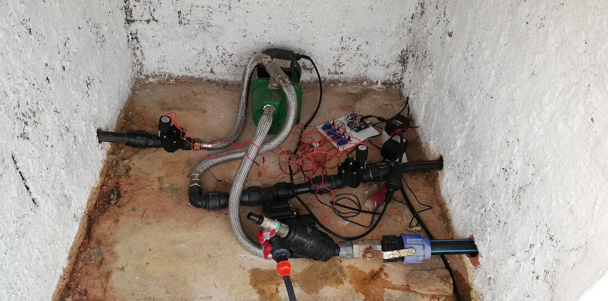

Diary Dates
06/06/2020 07/06/2020 08/06/2020Today I decided to change my final project again!
I needed to have irrigation working in the farm, I did not need more chicken right now, so well I changed again. It doesn't mean I gave up on the Chicken egg incubator. It only means I might have TWO final projects :-). Well maybe not, the reality is that I will focus on the irrigation, my fruit trees need the water, the greenhouse too. I have so much need for it right now and I need it to to work well that it makes it really worth the change.
As I am writing this there are no current design files, there is a sketch of a code and there is a prototype on a breadboard!
There are in the other hand requirements for the hardware and for the software:
As of today 07th of June 2020 the development is like this.

The code running on this setup can be found on the Fabfarm Github Autovalve
Shakeel one of our volunteers managed to create a version that runs on a ESP8266 that can be found in the same repo here. Due to the Pandemic situation he left us in a hurry and did not have time to test his code so it worked but not stable due to the fact that he heroically attempted to share the analog pin with the wifi, leading to drops in the wifi that rendered using the system almost impossible. This is the code that I started with.
After many hours trying to understand the code I managed to port Shakeel's code to a ESP32 and also split the file with each function on a separate file.
The code is to big for displaying on the HTML so I will leave a link for the state of the code as this early morning: codehere.
Links: